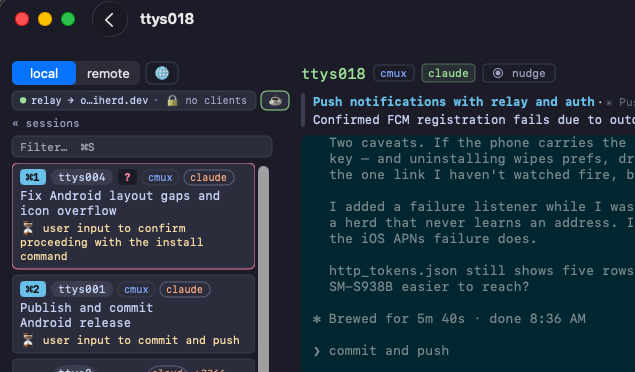
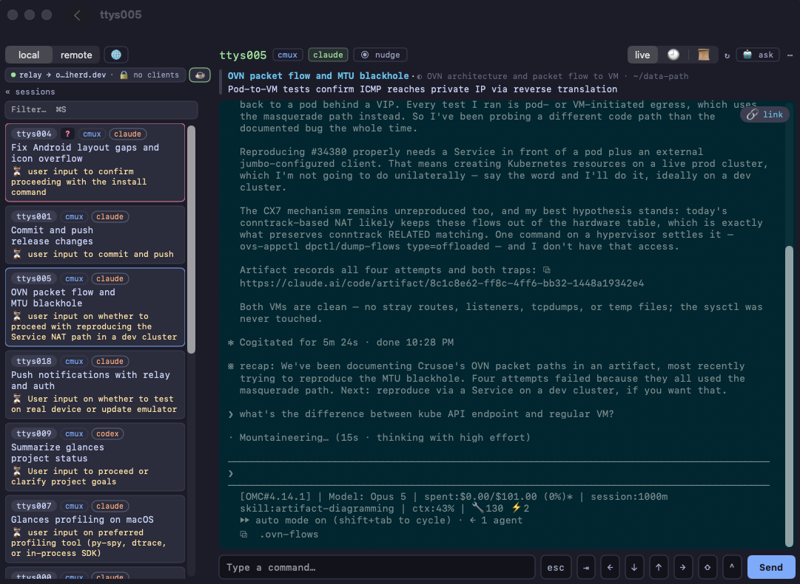
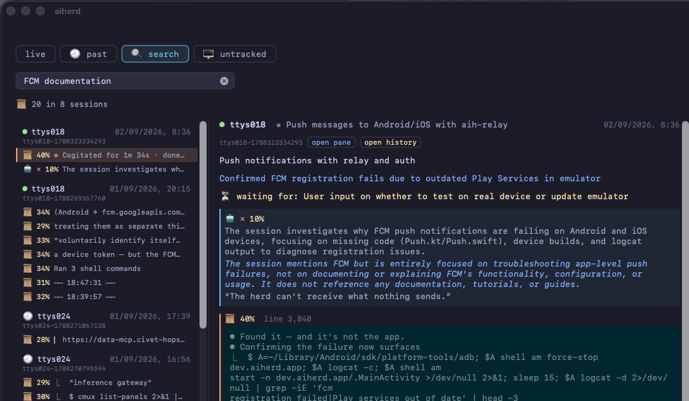
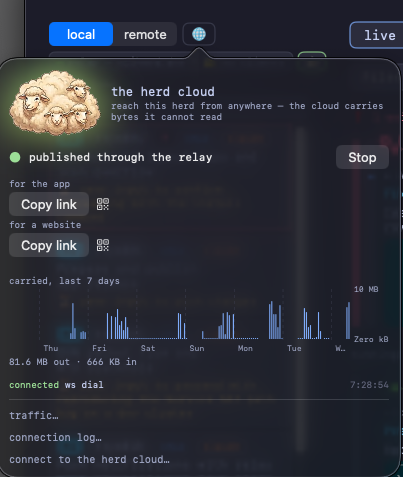
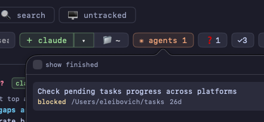
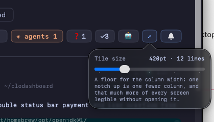

Watch every coding agent in one dashboard
You have six coding agents running in six panes. Five are working and one is blocked on a yes/no question. AIHerd tells you which — 100% local, and it follows Ghostty, iTerm2, Terminal, tmux and cmux.
brew install --cask aiherd-dev/aiherd/aiherdmacOS 14 (Sonoma) or newer · Apple Silicon or Intel







Join the mobile beta
The iPhone and Android apps are in testing. Leave a phone number and an email and we'll send you an invite.
You're on the list — we'll be in touch when the next build goes out.